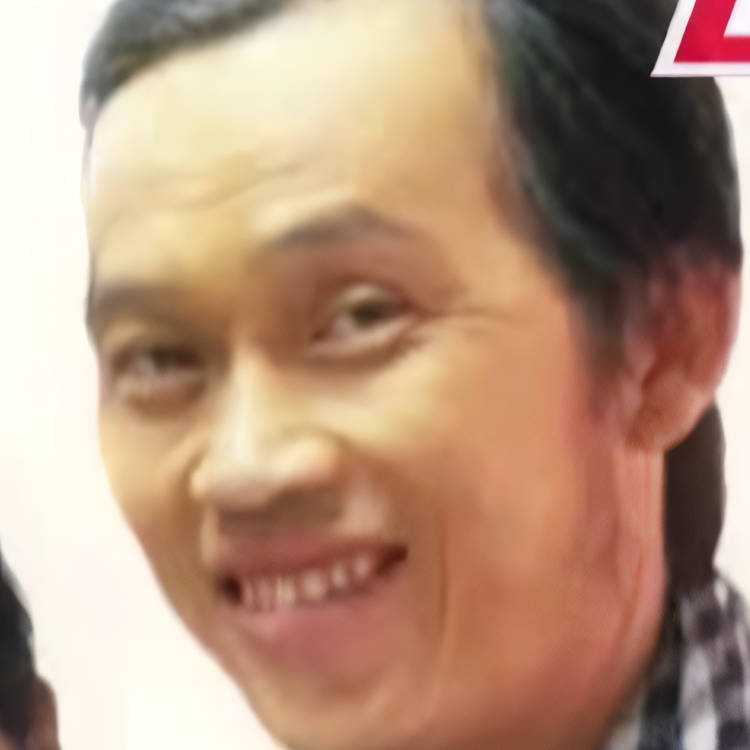

ABOUT US

Kamoto - Creative director, Quality control, Key opinion leader, Host
Some Jack-of-all-trades we found in some trash bin.

DavidScann - Lead designer, Quality control, OBS specialist
A very promising up-and-coming GFX designer who’s also made assets for Beyond The
Stars and Tetr.io
Amateur
Weeklies.
Kuroni - Flagship super coder
Though not very well-known in the international tetris community, he’s a superstar
domestically with his
“International Grandmaster” title on Codeforces and his current job as a Facebook intern.
Responsible
for
coding our seeding bot and being comic relief during work sessions.
Lightningreed (Lighto) - Web designer
Responsible for realising the very website you’re browsing right now, transforming it
from an idea into a very important part of our PR process.
Neyako - Lead static assets producer
Well-known in the osu! community for being an incredibly talented designer, we can’t
ever thank Neyako enough for the work he’s put in for us. Check out his portfolio over at
https://behance.net/Neyako and feel free to commission him for anything you might need- he’ll most
definitely do a great job at them.
Avilia - Influencer
Responsible for reaching out to the majority of our foreign staff, bringing in the
likes of Renge, Jed, and on a lesser scale, CZ, Smolfeesh and many many others.
Renge - Funds manager, Advisor
Everyone already knows but he’s from TeamTSD, an organization known for its tourneys
and their exceptional quality. The man guided us every step of the way and we can’t ever be thankful
enough for that.
Jed - Advisor
Along with Renge, Jed has also helped a lot. His constructive criticisms brought some
of our assets to a whole new level of quality. Nothing but respect for this legend.
TwoQuantumBits — Manager
Responsible for reaching out to the majority of our foreign staff, bringing in the
likes of Renge, Jed, and on a lesser scale, CZ, Smolfeesh and many many others.